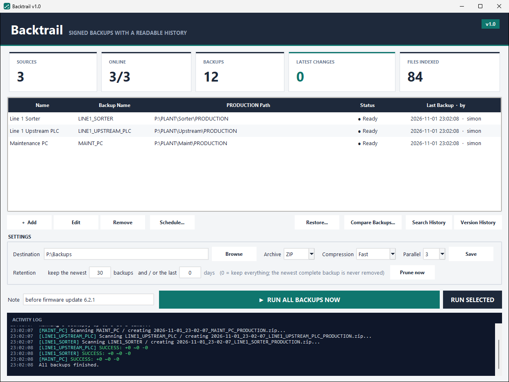
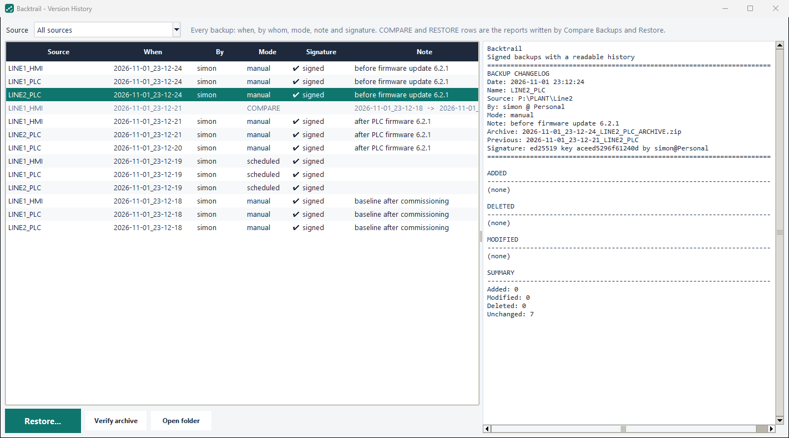
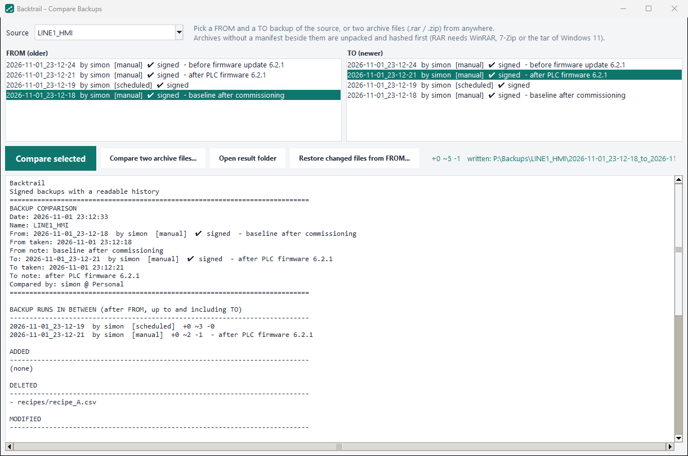
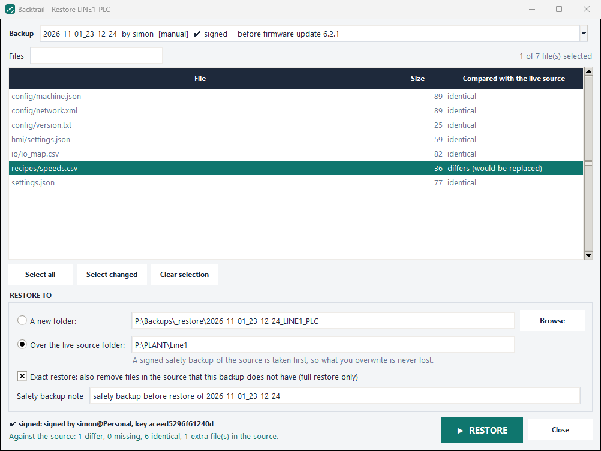

What is backed up, and when
Sources with their live Ready or Offline state, the last backup and who took it. Type a note, press Run, read the log.
Backups for the folders that run your machines
Backtrail copies the folders that run your machines, writes down exactly what changed and who changed it, seals every backup with a signature, and puts files back when it has to.
BACKUP CHANGELOG Date: 2026-10-24 10:08:18 Name: LINE1_PLC By: alice @ WS-LINE1 Note: before firmware update 6.2.1 Signature: ed25519 key dbf6103cee4a26c4 ADDED (none) DELETED - recipes/recipe_A.csv MODIFIED * config/version.txt * hmi/settings.json ~ $.speed: 1.0 -> 1.5 + $.windows: 12 SUMMARY Added: 0 Modified: 2 Deleted: 1
One changelog per backup. Who, when, why, and for JSON settings the exact key that moved.
What it does
Nightly archives tell you nothing about Tuesday versus Monday. Backtrail compares every backup with the one before and keeps the answer next to the archive, in plain text.
Any number of local or network folders, in parallel, as ZIP or RAR. Files in use are skipped and listed, never a reason to stop.
Added, modified and deleted files since the last run. For JSON settings, the key and its old and new value. Any two backups can be compared, weeks apart.
Every file gets a SHA-256 fingerprint and every backup an Ed25519 signature. A changed file, list or author claim shows as INVALID.
One file or the whole folder, into a new place or over the live source. Verified before written, with a signed safety backup first.
How it works
Every file is read and fingerprinted, on all cores.
The folder is packed at the same time as the scan.
New fingerprints against the previous backup’s manifest. No archive is unpacked.
The changelog and the manifest, with your name, PC, time and note.
The manifest is sealed with your private key. Any later change shows.
Screens

Sources with their live Ready or Offline state, the last backup and who took it. Type a note, press Run, read the log.

Every backup with its author, mode, signature mark and note. Click a row and read its changelog. Search History finds a file name, a parameter or a value across all of them.

Pick FROM and TO, however far apart. One changelog for the span, plus the runs in between with their authors. Works on plain archive files too.

Each file shows whether it is identical, different or missing on the machine. Select the changed ones, restore into a folder or over the source. A safety backup is taken first.
Trust
64 characters that stand for the exact content of a file. The same bytes give the same value in any tool on any PC; one changed character gives a completely different one. It cannot say who made the file, and anyone can recompute it after a change.
Each user gets a private key on their PC and a public key in the backup folder. The manifest, with every fingerprint, the archive’s fingerprint, the name, date and note, is sealed with the private key. Anyone checks it with the public one; nobody can forge it without the private one.
Specs
| Runs on | Windows 10 and 11. A folder with an exe, no installer, no admin rights. Also runs from source with Python 3.10+. |
|---|---|
| Sources | Any local or UNC path (\\server\share\config). Several at once. |
| Archives | ZIP built in, three compression levels. RAR through WinRAR. |
| Integrity | SHA-256 per file; Ed25519 signature per backup; --verify re-checks everything and exits 1 on a problem. |
| Automation | Daily Windows scheduled task. Backtrail.exe --run --note "text" from any scheduler. |
| Retention | Keep the newest N backups and/or the last N days per source. The newest is never removed. |
| Privacy | Nothing leaves your network. Backtrail reads the folders you name and writes to the destination you choose. |
| License | MIT. Source, tests and build script on GitHub. |